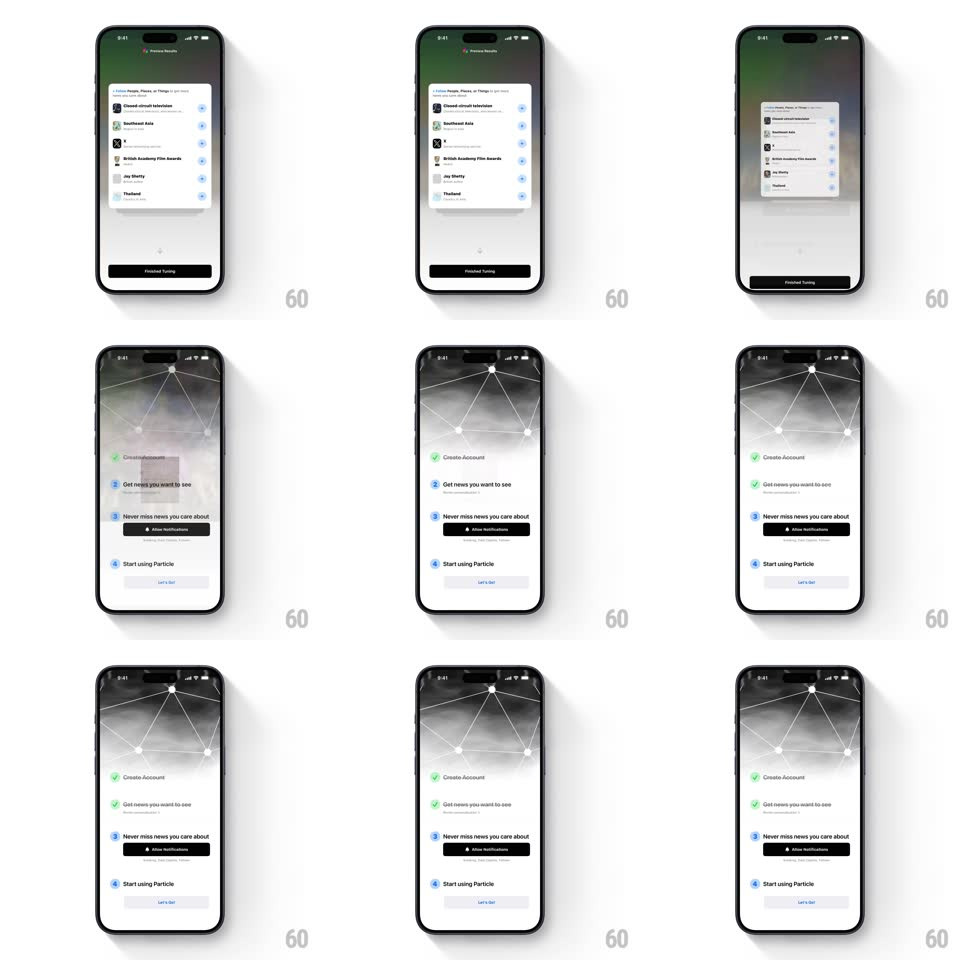

Media
Frame-by-frame

Rebuild this animation 1:1: Particle's onboarding checklist - each completed step strikes through and its numbered circle morphs into a green checkmark while the next step activates, ending on "Start using Particle" with a "Let's Go" button.

Rebuild this animation 1:1: Particle's onboarding checklist - each completed step strikes through and its numbered circle morphs into a green checkmark while the next step activates, ending on "Start using Particle" with a "Let's Go" button. ## Integration Integration: stack-agnostic spec - springs given as stiffness/damping, timed motions as duration + curve; map every value to your framework and animation library of choice. ## Scene Light screen with the node-network motif up top. A vertical checklist: "1 Create Account", "2 Get news you want to see", "3 Never miss news you care about" (with an "Allow Notifications" black button), "4 Start using Particle" (with a "Let's Go" button). Earlier steps show green check circles and strikethrough text. ## Motion spec Pattern: sequential checklist completion, ~400ms per step. - Complete: the step's numbered circle spins + fills green (300ms, ease-out) while a checkmark draws in (stroke-dash, 250ms, +50ms). - Strike: the step text strikes through left to right (250ms) and dims to gray (200ms). - Activate: the next step's number pops in (scale 0.6 -> 1, spring ~380/20) and its body rises 4px (200ms). - Sub-screen: the tuning sheet (topic list: Closed-circuit television, Southeast Asia, British Academy Film Awards, Jay Shetty, Thailand, each with a + button) slides up as a sheet (350ms, ease-out); tapping + fills it with a check (200ms) and "Finished Tuning" completes the step. ## Calibration - Only one step is active at a time; future steps show hollow numbered circles. - The strike lands after the check draw finishes, not before. ## Reduced motion Check fades in (200ms); text dims without strike. ## Don't miss - The circle morph is number-to-check in one element, not a swap of two icons. - "Allow Notifications" and "Let's Go" are the only black buttons; their steps stay current until tapped.